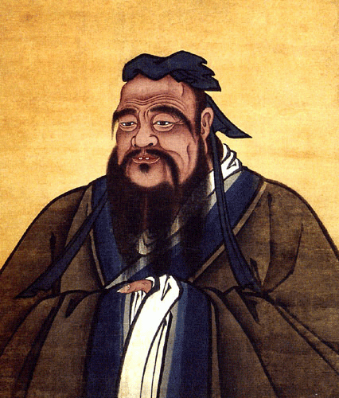

GOOD MORNING!

吳國睿 Jeffrey wu
想更了解吳國睿嗎?

介紹
孔丘，子姓，孔氏，名丘，字仲尼，後代敬稱孔子或孔夫子，是中國最早的老師。生於魯國陬邑，祖先為宋國貴族，東周春秋末期魯國的教育家與哲學家，曾在魯國擔任官府要職。孔子為儒家創始人，其思想對鄰近地區，如：朝鮮半島、琉球、日本、越南、東南亞等有深遠影響，此等地區也被稱爲儒家文化圈。名稱
孔子在世時被譽為「天縱之聖」、「天之木鐸」，由董仲舒倡議，漢武帝施行「獨尊儒術」政策，後世統治者或孔教信徒陸續尊稱孔子為聖人、文聖、至聖、至聖先師、大成至聖先師、萬世師表。道教稱號：太極上真九疑主宰文昌皇人玄聖道君、東海廣桑山真君、闡猷大帝、興儒盛世天尊。 而一般對孔子的慣用敬稱為孔夫子，英語等西方語言中的Confucius則是「孔夫子」（Con-Fu-Ci）的拉丁語化。| \ | 系隊 | 社團 | 興趣 |
|---|---|---|---|
| 大一 | 羽球 壘球 | 美食社 汪汪社 慈幼社 活動部 | 出去玩 |
| 大二 | 羽球 飛盤 | 慈幼社 活動部 | 睡覺 |
關於我
- 身高:200
- 體重:100
- 星座:摩羯座
- 血型:B
- 喜歡的食物:全部